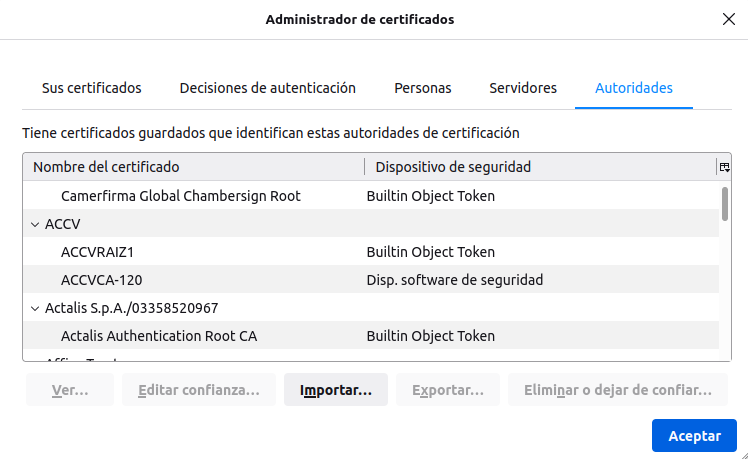

7.2.3 Infraestructuras de clave pública (PKI)
1. Introducción
Una infraestructura de clave pública PKI es una combinación de hardware, software, políticas y procedimientos de seguridad, que permiten la ejecución con garantías de operaciones criptográficas como el cifrado, la firma digital y el no repudio de transacciones electrónicas.
La criptografía de clave pública fue inventada en 1975 por Whitfield Diffie y Matin Hellman. Se basa en emplear un par de claves distintas, una pública y otra privada. La idea fundamental es que las claves están ligadas matemáticamente pero es computacionalmente imposible obtener una a partir de la otra.
Este tipo de algoritmos tienen dos aplicaciones fundamentales:
- Cifrado. Si un usuario A quiere mandar un mensaje a otro usuario B, lo cifra usando la clave pública de B. Cuando B lo recibe lo descifra usando su clave privada. Si alguien intercepta el mensaje no puede descifrarlo, ya que no conoce la clave privada de B (de hecho, ni tan siquiera A es capaz de descifrar el mensaje).
- Firmas digitales. Si B cifra un mensaje usando su clave privada cualquiera que tenga su clave pública podrá obtener el texto en claro correspondiente; si alguien quiere hacerse pasar por B tendrá que cifrar el mensaje usando la misma clave privada o no se descifrará correctamente con la clave pública de B. Lo que B ha hecho es firmar digitalmente el mensaje. El proceso de descifrar con una clave pública un mensaje firmado se denomina verificación de firma.
El problema fundamental de este tipo de algoritmos es la distribución de las claves; aunque la clave pública se puede distribuir libremente (A la puede enviar por correo o decírsela a B por teléfono), nos queda el problema de la suplantación (C le puede dar su clave pública a B haciéndose pasar por A -Ataque Man in the Middle). Para solventar estos problemas entran en juego las autoridades de certificación (AC o CA, Certification Authority), que asumen la responsabilidad de autenticar la identidad de esa clave pública (vincular las claves públicas a las entidades) y que aparecerá en un documento electrónico llamado certificado digital.
Todo este conjunto de certificados, firmas digitales, autoridades de certificación y los procesos que intervienen, forman parte de lo que se conoce como infraestructura de clave pública.
"Por infraestructura de clave pública o PKI (Public Key Infraestructure) se entiende el conjunto de herramientas hardware, software, procesos y procedimientos legales que permiten crear, gestionar, almacenar, distribuir y revocar certificados digitales".
"Este término incluye por tanto las autoridades de certificación y al resto de elementos que participan como los certificados digitales o los algoritmos de clave pública y firma digital en comunicaciones y transacciones electrónicas".
2. Componentes de una PKI
Figuran las entidades que se relacionan y la gestión de los certificados de clave pública.
Están regulados por la norma ITU. X.509.
Las entidades de una PKI:
- Emiten certificados.
- Renuevan certificados.
- Verifican y emplean certificados.
- Revocan certificados.
Una infraestructura de clave pública consta de:
- Titulares de Certificados. Son las entidades finales, usuarios o suscriptores de los certificados y por tanto a quien pertenecen.
- Autoridad de registro (RAs). Autorizan la asociación entre una clave pública y el titular de un certificado.
- Autoridad de certificación (CAs). Llevan la gestión de los certificados.
- Autoridad de validación (opcional). Suministra información de forma online (en tiempo real) acerca del estado de un certificado.
- Repositorio de certificados y CRL's. Almacenan y distribuyen certificados y estados de los mismos.
Figura 1. Componentes y su relación de una PKI.
Un elemento importante en la PKI son los certificados digitales, documentos electrónicos emitidos por autoridades de certificación (AC) que garantizan la identidad de un usuario o servicio electrónico como una página web.
2.1 Norma X.509
X.509 es un estándar de UIT-T para infraestructuras de clave pública. Entre otras cosas, especifica formatos estándar para certificados de claves públicas y un algoritmo de validación de la ruta de certificación.
Un certificado digital X.509 v3 tiene la siguiente estructura:
- Certificado
- Versión.
- Número de serie del certificado.
- ID del algoritmo utilizado por la AC para firmar.
- Emisor (AC).
- Validez:
- No antes de.
- No después de.
- Sujeto.
- Información de clave pública del sujeto:
- Algoritmo de clave pública.
- Clave pública del sujeto.
- Identificador único del emisor (opcional).
- Identificador único del sujeto (opcional).
- Extensiones X509v3 (opcional).
- Algoritmo usado para firmar el certificado
- Firma digital del certificado
El campo Version indica la versión del certificado. Algunos campos no aparecen en según qué versiones:
El campo Serial Number contiene un número de serie que debe ser único para cada certificado emitido por una misma AC.
El campo Subject contiene los datos que identifican al sujeto titular en notación DN (Distinguished Name), compuesto a su vez de diversos campos en una sola línea separados por comas (entre los más frecuentes):
- CN (Common Name, nombre común).
- OU (Organizational Unit, nombre de la unidad organizativa).
- O (Organization, nombre de la organización).
- L (Locality, nombre de localidad).
- ST (State or Province, nombre del estado o provincia).
- C (Country, nombre del país).
Ejemplo:
C=ES, ST=Castellón, L=Castellón, O=IES_EL_Caminás OU=Departamento_Informatica, CN=ieselecaminas.org/emailAddress=admin@ieselecaminas.org
El campo Issuer contiene los datos que identifican a la AC en notación DN.
El campo Validity contiene las fechas entre las cuales el certificado es válido (Not before y Not after).
El campo X509v3 extensions es exclusiva de la versión 3 de X.509 y permite utilizar campos opcionales para indicar nombres alternativos al principal, usos permitidos para la clave, ubicación de la CRL y la AC, etc. Las extensiones pueden ser críticas o no críticas; las no críticas son ignoradas, mientras que las críticas se deben aplicar hasta el punto de que si el sistema no reconoce una extensión crítica, todo el certificado debe ser rechazado.
El campo Subject Public Key Info contiene la clave pública incluyendo también el algoritmo utilizado para crear la clave.
Por último, la AC añade una serie de campos que identifican la firma de los campos previos. Esta secuencia contiene tres atributos: el algoritmo utilizado en la firma, el resumen (hash) de la firma y la propia firma digital.
3. Entidades participantes de una PKI.
Las entidades participantes de una PKI se llaman Certificate Authority (CA).
Estas, emiten certificados (actúan como notarios) y acreditan e identifican a una entidad. También realizan funciones de autenticación y tienen dos atributos principales:
- Nombre de la CA.
- Clave pública de la CA.
4. Funciones de una PKI
Las funciones de una PKI son:
- Emitir certificados PKC (Public Key Certificate).
- Mantener actualizada la información sobre los certificados.
- Emitir y publicar listas de certificados revocados.
- Mantener el histórico del estado de los certificados revocados.
- Un PKC se puede emitir de manera:
- Personal.
- Otras CA, cadena de certificación.
- Los certificados emitidos se firman con la clave privada de la CA.
5. Estructura de una PKI
La estructura de una PKI es la siguiente:
- Modelos jerárquicos, en red y puente.
- Existe una CA raíz en la que se deposita toda la confianza.
- Por debajo de la CA raíz se disponen otras CA subordinadas que pueden emitir y gestionar certificados.
Figura 1. Jerarquía CA.
6. Validación de una cadena de certificación
Se necesita determinar si un certificado de una entidad final ha sido emitido por una CA de confianza. El primer certificado de la cadena pertenecerá a una CA de confianza o habrá sido emitido por ella (autofirmado).
Para las CA intermedias:
- Una CA avala a la siguiente.
- Todos los certificados intermedios emitidos son válidos.
El último certificado de la cadena es el de la entidad final.
7. Validación en los navegadores
Cuando se navega por sitios web empleando el protocolo https el navegador facilita los certificados ya que tiene instalados los certificados de la CA raíz de confianza.

Figura 2. Administrador de certificados en Firefox.
Figura 3. Certificado emitido por ACCV.
Cuando no se puede verificar un certificado, nos aparece la siguiente información:
Figura 4. No se puede verificar el certificado del sitio web.
8. Listado de certificados revocados
Cuando un certificado caduca o el usuario ya no lo necesita, se revoca. Las razones son las siguientes:
- Clave privada comprometida.
- Clave privada de la CA emisora comprometida.
- Pérdida de derechos de uso del certificado.
- Reemplazo por otro certificado.
- Certificado revocado temporalmente.
Las CA's mantienen una lista de certificados revocados (CRL) y son responsables de mantener la lista.
Un certificado se verifica contra la lista para detectar su validez.
El protocolo usado para la revocación o estado de un certificado es el OCSP.
OCSP es un protocolo de x.509 para la revocación de certificados. Facilita la verificación en línea de los certificados debido a CRL desactualizadas.
Las acciones que realiza son las siguientes:
- Un cliente OCSP solicita a un servidor OCSP información sobre un certificado.
- El servidor OCSP responde al cliente sobre el estado del certificado.
9. ADCS Windows Server
En Windows Server, se tiene el rol ADCS (Active Directory Certificate Services ) que nos evita tener que usar un tercero para hacer la autenticación realizando esta comprobación internamente en nuestro sistema.
ADCS permite realizar una infraestructura de clave pública (PKI) y proporcionar criptografía de clave pública, certificados digitales y firma electrónica para nuestra organización.
Las ventajas de ADCS son:
- Permite trabajar simultáneamente con Active Directory.
- Mantiene las políticas de grupo y asistentes de Active Directory.
- Automatiza la gestión de certificados.
- Realiza la instalación automática de certificados.
Como desventajas se destacan las siguientes:
- La CA que se crea no será reconocida frente a otras entidades oficiales.
- El tiempo de configuración para su realización y gasto de hardware es grande.
Se tendría que valorar si se quiere realizar esta función en la organización o externalizarla a un tercero.
10. Alternativas a la PKI
Una alternativa a la infraestructura de clave pública es el esquema de red de confianza, que utiliza un modelo de confianza descentralizado frente al modelo centralizado de la PKI. En lugar de existir una AC (o una jerarquía de AC) que firme las claves públicas, los participantes de la red firman entre sí sus claves públicas con sus claves privadas, con lo que certifican que la clave pública pertenece a la persona física a la que se atribuye.
Obra publicada con Licencia Creative Commons Reconocimiento No comercial Compartir igual 4.0